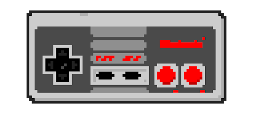

En 1983 Nintendo sort la Family Computer (les jeux vidéo étaient nouveaux à l’époque, il fallait que cela donne envie aux parents). Vous la connaissez probablement sous le nom de la Nintendo Entertainment System ou devrais-je dire, la NES. C’est sur cette console qu’est apparu le tout premier The Legend of Zelda, Metroid et surtout Super Mario Bros, un des jeux les plus vendus au monde avec 40,24 millions d’exemplaire vendus.
On pouvait également acheter des accessoires comme R.O.B par exemple (la plupart furent sans succès).
En moyenne, les jeux de la NES faisaient 1,6 Mégaoctet.
La nes était programmé majoritairement en Assembly language.
